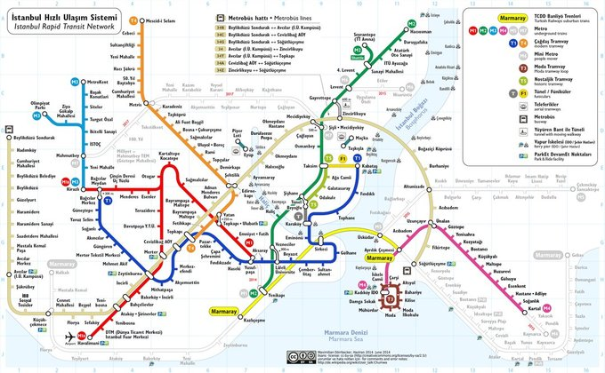

1.签证
土耳其电子签，https://www.evisa.gov.tr/zh/ ，付款后秒速收到签证。
2.机票：
国际段---俄航，提前24小时值机，除了食物难吃和没有英文字幕的电影，其他都很OK；
国内段---土航，伊斯坦布尔--格雷梅，安塔利亚--伊斯坦布尔。网上说提前48小时值机，但实操貌似也是提前24小时值机啊，对欧洲最佳航空没有太深刻的体会，大概是因为经济舱的食物也很一般吧。
3.城际交通：
土国的火车似乎不发达，但长途大巴系统很发达。各种公司的大巴基本可以满足你在各个城市之间穿行的所有需求。
如何买大巴票：没必要在网上提前预定（淡季建议），提前一天买足够，在每个城市的Otogar现场买即可，google map在手，你不会找不到Otogar。
4.国内交通：
机场交通：土耳其有两个机场，一个是位于欧洲区的阿塔图尔克国际机场（Ataturk international airport）,另一个是位于亚洲区的撒比哈.格克琴国际机场（Sabiha Gokcen International airport）,从中国飞伊斯坦布尔的航班基本都是在欧洲机场起降，而土耳其国内段的许多廉航则在亚洲机场起降。欧洲机场距离市中心相对较近（25km左右），交通便利，公交、轻轨、出租车、机场大巴都可以轻松往来机场。亚洲机场距离市区较远（40-50km左右），没有轻轨可达，可选择出租车或者机场大巴
交通卡： 如果在伊斯坦布尔多待几天，交通卡还是很有必要，可以乘坐各种公共交通。轻轨或地铁旁都有自助售票买卡的地方，卡费6里拉不可退，各站台基本都有自动充值机可直接充值，使用交通卡在2小时内换乘可享优惠，一卡可供多人使用，但换乘的优惠只有一个人能享受。

5.当地美食
烤肉：牛肉都自带羊膻味，以至于我们经常会reconfirm老板这真的是牛肉么？ 而且对于无比热爱烧烤的一只宝来说，这里的烤肉也是rio plain了。
甜点和冰淇淋：土耳其的冰淇淋是那种粘扯着断不了的那种，没吃到特别惊艳的，大多都很甜。
茶：对于土国人民一天五杯不离手的茶，我只能说no, thx。客观讲，苹果茶还行，红茶什么的实在是想不通为啥能这么受喜爱。
软糖：真的。。。一点。。也。。。不好吃。。。也许我们没选到好吃的那种吧。。。
街上小摊的面包类点心：充其量是充饥的吧，比我大天朝新疆小哥卖的馕差了一个太平洋。 没有需要特别推荐的饭店，如果实在要推荐一家： 格雷梅小镇的pumpkin餐厅，还是不错的，食物比较精致，鸡肉的主餐是我土耳其十天以来吃的最好吃的一顿，甜点虽然很甜，但也很有特色很好吃，还有一个语速超级快的小美女。
6.购物：
土耳其特色有很多，比如我上面提到的土耳其茶、软糖，还有土耳其手工灯、手工瓷器、香料、水烟等等，还有很有特色的蓝眼睛。
土耳其地毯是真的很漂亮，我们在格雷梅买了一条不错的地毯，据说格雷梅地毯比伊斯坦布尔等周边地方要便宜（但我们后来也没去比过价，当然也无法区分好劣），也通过那家老板了解了非常多地毯的历史和常识，至于是哪一家，你们如果遇上了一个激情澎湃热情洋溢抓着你讲一千零一夜也不会累的中年男性，那一定就是他了。